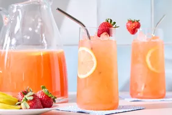

Strawberrylemonade
Home

A Refreshing Drink Combining Strawberries and Lemonade
Homemade strawberry lemonade with simple syrup is a very refreshing drink. This recipe uses ripe strawberries and
plenty of fresh lemon juice to make the best pink lemonade ever! It's so refreshing when served chilled on a hot summer day.
ingredients
- Strawberries
- sugar
- water
- Lemons
- ice
How to make
- Mix together
strawberries and 1/4 cup sugar in a medium bowl until evenly coated;
set aside for juices to release from strawberries, 5 to 10 minutes.
- Meanwhile, bring 1 cup water to a boil in a small saucepan; add remaining 3/4 cup sugar. Cook and stir until sugar is dissolved, about 5 minutes.
Remove the saucepan from heat and cool simple syrup to room temperature.
- Stir together remaining 6 cups water, ice,
lemon juice, and simple syrup in a pitcher until well combined. Stir in sweetened strawberries.